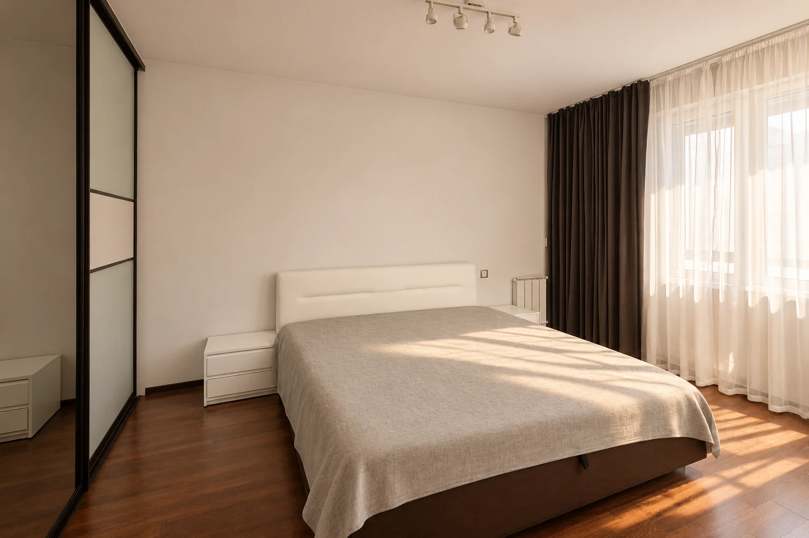

<!-- HTML-ФРАГМЕНТ: 03-lot-features.html; не полная страница. -->
<section class="section " id="lot-features" aria-labelledby="lot-features-title"><div class="container"><div class="section-heading"><div><p class="eyebrow">ОБ ОБЪЕКТЕ</p><h2 id="lot-features-title">Характеристики объекта</h2></div></div><div class="passport"><figure></figure><dl class="passport-facts" aria-label="Характеристики объекта"><div><dt><span>Тип объекта</span></dt><dd>Квартира</dd></div><div><dt><span>Площадь</span></dt><dd>62,4 м²</dd></div><div><dt><span>Комнат</span></dt><dd>2</dd></div><div><dt><span>Кухня</span></dt><dd>10,66 м²</dd></div><div><dt><span>Потолки</span></dt><dd>2,65 м</dd></div><div><dt><span>Этаж</span></dt><dd>12 из 13</dd></div><div><dt><span>Отделка</span></dt><dd>Евроремонт</dd></div><div><dt><span>Санузел</span></dt><dd>Совмещённый · 1</dd></div><div><dt><span>Окна</span></dt><dd>Во двор и на улицу</dd></div><div><dt><span>Цена за м²</span></dt><dd>333&nbsp;333 ₽</dd></div></dl></div></div></section>
